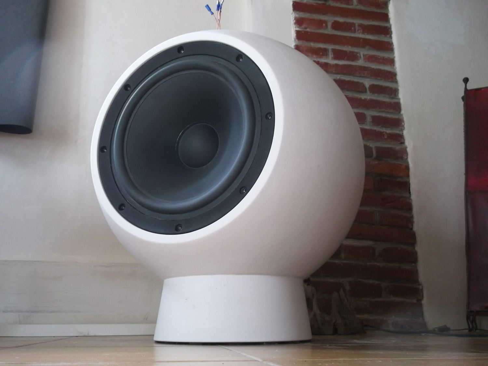

Gamme plâtre
Les enceintes en plâtre
Moulées puis polies à la main, ce sont des pièces de salon. Elles se raccordent le plus souvent au son d'un téléviseur, mais aussi à un ampli ou à une platine. Leur masse et leur forme ronde font disparaître les résonances d'un caisson classique.
Voir la gamme plâtre